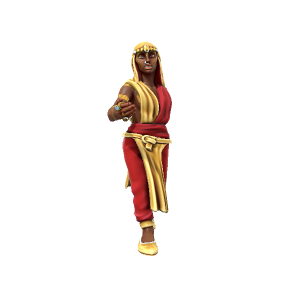

Kash Anandera
She/Her, Kasharite Elf
Concubine recognised as the most legitimate, who has been chosen to bare the next Sultan. As pleasing to the eye as she is the soul, this deeply affable women has the heart of both the Sultan and the people. Now that she is in place, her central aim is to give the Sultan an heir to secure her status as Celebrated Mother.
